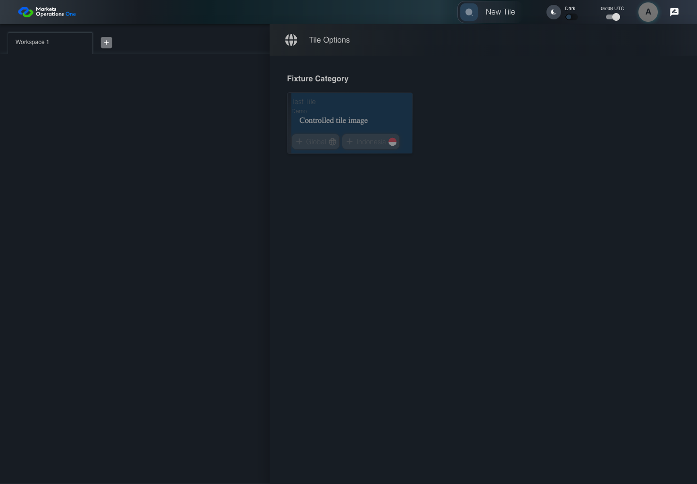
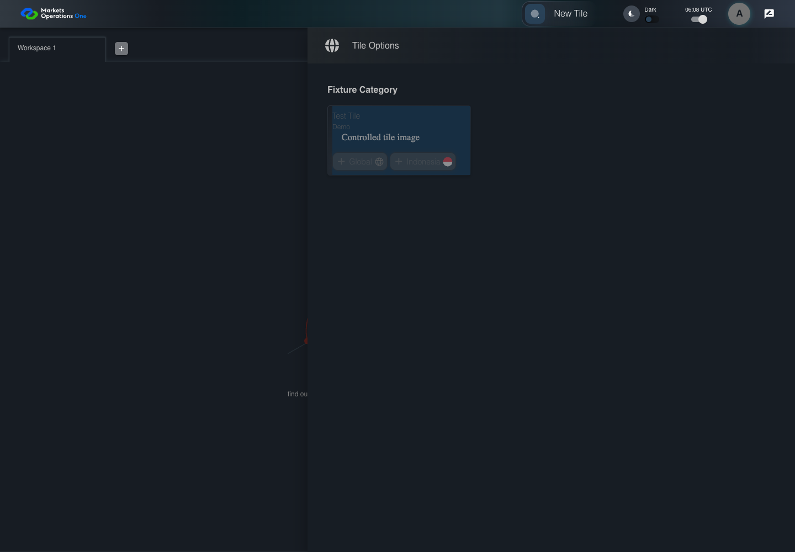

UI-CAT-013 keep every disabled entry inactive
PASS · application/run-050/ui-cat-013-keep-every-disabled-entry-inactive-e2ac2917b21d-attempt-1 · ACTUAL_APPLICATION_LOCAL_SERVICES
Actual current React shell. Controlled login, validation, and activity renewal responses supply UI-USER-01, catalog, and entities. A controlled SystemJS React container displays routes and parameters. Local fixture SVGs replace catalog images. Identity, entitlements, and business tenant behavior are not established.
2026-10-22T06:08:06.883Z to 2026-10-22T06:08:10.097Z
Assertions and result · Artifact manifest · Exact run inputs and source hashes
Result SHA-256:8838e7a3cafa2fbb0ce2ad4d0f7803aedec71c4b2a7c88006ffed7404b83996cScreenshot capture: CAPTURED. Named frames: 9.
Step screenshot bindings: COMPLETE. 8/8 canonical steps have execution screenshots.
Bindings measure structural coverage only. They do not establish screenshot content quality or relevance.
Screenshot content review: NOT_REVIEWED. Recorded context: 0/9 frames. Identical image bytes: 6 repeated frames. Recorded context does not establish human visual review.
Canonical step timeline
Given User A is authenticated as fixture UI-USER-01 with the case-specific permissions
Execution: PASSED.
1. step-01 Visible state after step 1: Given User A is authenticated as fixture UI-USER-01 with the case-specific permissions
2026-10-22T06:08:08.389Z · 1440×1000
Step: /Users/lushevol/code/github/ratan-release-impact/workbench/tasks/ui-test-coverage-20261022/test-cases.md:6653
SHA-256:fcdb7e886745751817c5a9e551fd47a62899d6497092ca8f80a5c9e3d9e7d6d1And every entry in the Test Tile group has disabled true
Execution: PASSED.
2. step-02 Visible state after step 2: And every entry in the Test Tile group has disabled true
2026-10-22T06:08:08.683Z · 1440×1000
Step: /Users/lushevol/code/github/ratan-release-impact/workbench/tasks/ui-test-coverage-20261022/test-cases.md:6654
SHA-256:015b11c2da6dd6f3473e3224b4a2f928466c1bce36571f1049b95edf4d57a228When User A clicks section with text "Test Tile" inside the tile group with subtitle "Demo" in the fixture category inside the right drawer titled "Tile Options"
Execution: PASSED.
3. step-03 Visible state after step 3: When User A clicks section with text "Test Tile" inside the tile group with subtitle "Demo" in the fixture category inside the right drawer titled "Tile Options"
2026-10-22T06:08:08.795Z · 1440×1000
Step: /Users/lushevol/code/github/ratan-release-impact/workbench/tasks/ui-test-coverage-20261022/test-cases.md:6655
SHA-256:015b11c2da6dd6f3473e3224b4a2f928466c1bce36571f1049b95edf4d57a228Image bytes match frame 2. An unchanged image can be valid for consecutive assertions. This match does not establish correct step content.
And User A attempts one pointer click on button named "Global" inside the section identified by title "Test Tile" and subtitle "Demo"
Execution: PASSED.
4. step-04 Visible state after step 4: And User A attempts one pointer click on button named "Global" inside the section identified by title "Test Tile" and subtitle "Demo"
2026-10-22T06:08:09.023Z · 1440×1000
Step: /Users/lushevol/code/github/ratan-release-impact/workbench/tasks/ui-test-coverage-20261022/test-cases.md:6656
SHA-256:c716ac1b6cfd90af21e0fed3617bfcfa75e9d2cc881c5ed9232e706f7285abb9Then button named "Global" inside the section identified by title "Test Tile" and subtitle "Demo" is disabled
Execution: PASSED.
5. step-05 Visible state after step 5: Then button named "Global" inside the section identified by title "Test Tile" and subtitle "Demo" is disabled
2026-10-22T06:08:09.184Z · 1440×1000
Step: /Users/lushevol/code/github/ratan-release-impact/workbench/tasks/ui-test-coverage-20261022/test-cases.md:6657
SHA-256:c716ac1b6cfd90af21e0fed3617bfcfa75e9d2cc881c5ed9232e706f7285abb9Image bytes match frame 4. An unchanged image can be valid for consecutive assertions. This match does not establish correct step content.
When User A attempts one pointer click on button named "Indonesia" inside the section identified by title "Test Tile" and subtitle "Demo"
Execution: PASSED.
6. step-06 Visible state after step 6: When User A attempts one pointer click on button named "Indonesia" inside the section identified by title "Test Tile" and subtitle "Demo"
2026-10-22T06:08:09.302Z · 1440×1000
Step: /Users/lushevol/code/github/ratan-release-impact/workbench/tasks/ui-test-coverage-20261022/test-cases.md:6658
SHA-256:c716ac1b6cfd90af21e0fed3617bfcfa75e9d2cc881c5ed9232e706f7285abb9Image bytes match frame 5. An unchanged image can be valid for consecutive assertions. This match does not establish correct step content.
Then button named "Indonesia" inside the section identified by title "Test Tile" and subtitle "Demo" is disabled
Execution: PASSED.
7. step-07 Visible state after step 7: Then button named "Indonesia" inside the section identified by title "Test Tile" and subtitle "Demo" is disabled
2026-10-22T06:08:09.394Z · 1440×1000
Step: /Users/lushevol/code/github/ratan-release-impact/workbench/tasks/ui-test-coverage-20261022/test-cases.md:6659
SHA-256:c716ac1b6cfd90af21e0fed3617bfcfa75e9d2cc881c5ed9232e706f7285abb9Image bytes match frame 6. An unchanged image can be valid for consecutive assertions. This match does not establish correct step content.
And the workspace count equals its pre-action count
Execution: PASSED.
8. step-08 Visible state after step 8: And the workspace count equals its pre-action count
2026-10-22T06:08:09.497Z · 1440×1000
Step: /Users/lushevol/code/github/ratan-release-impact/workbench/tasks/ui-test-coverage-20261022/test-cases.md:6660
SHA-256:c716ac1b6cfd90af21e0fed3617bfcfa75e9d2cc881c5ed9232e706f7285abb9Image bytes match frame 7. An unchanged image can be valid for consecutive assertions. This match does not establish correct step content.
Additional named frames

The final visible state after the named test assertions.
2026-10-22T06:08:09.659Z · 1440×1000Step: Test source: /Users/lushevol/code/github/ratan-release-impact/workbench/e2e/audit-specs/catalog-profile-expanded.spec.ts:154
SHA-256:
c716ac1b6cfd90af21e0fed3617bfcfa75e9d2cc881c5ed9232e706f7285abb9Image bytes match frame 8. An unchanged image can be valid for consecutive assertions. This match does not establish correct step content.
Screenshots establish visible state only. Assertions and traces support functional claims.